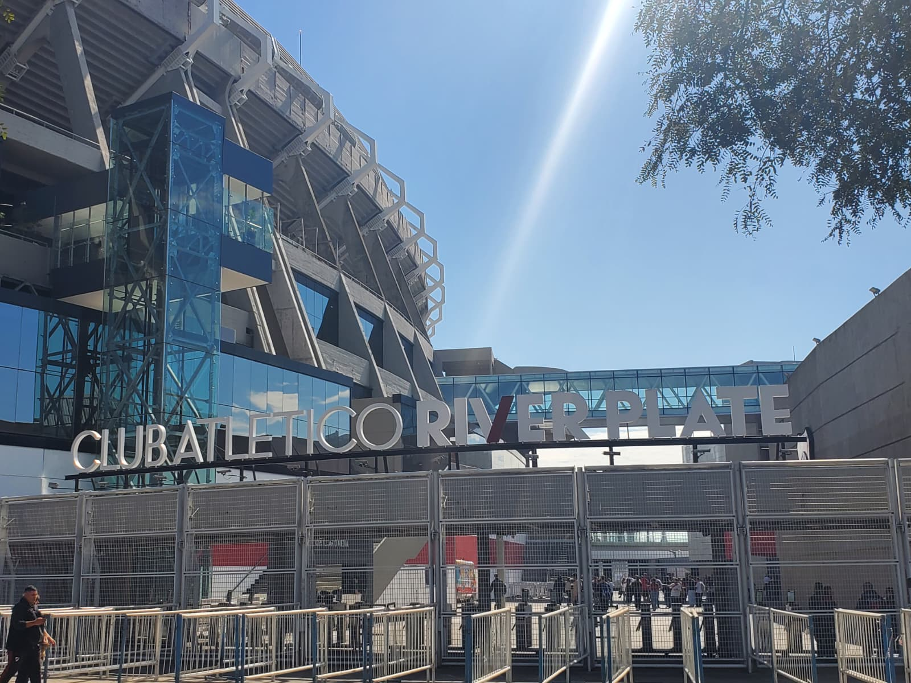
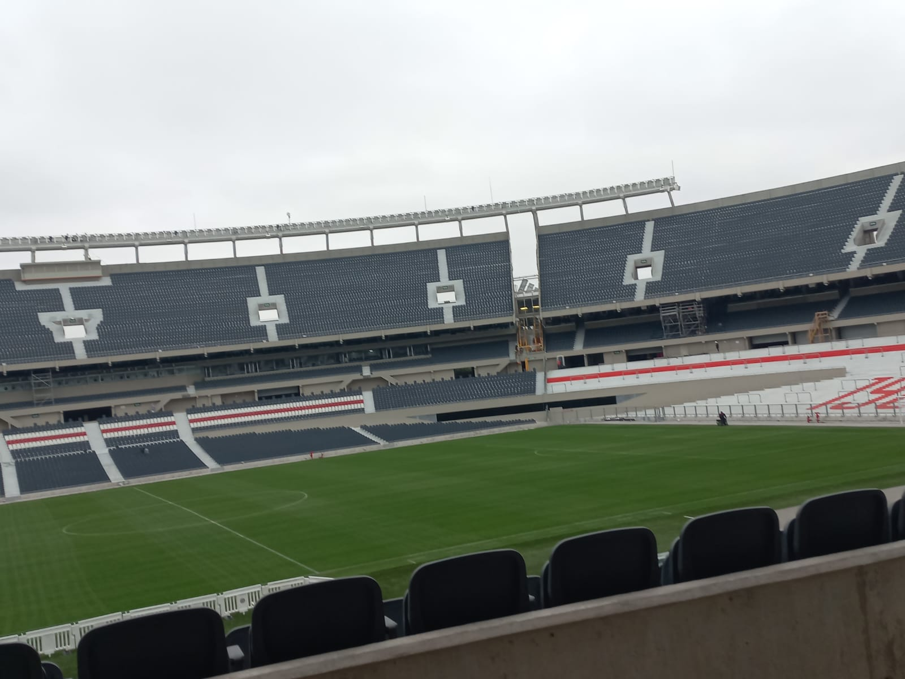
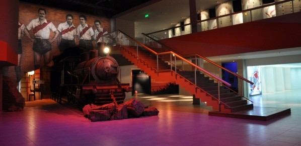
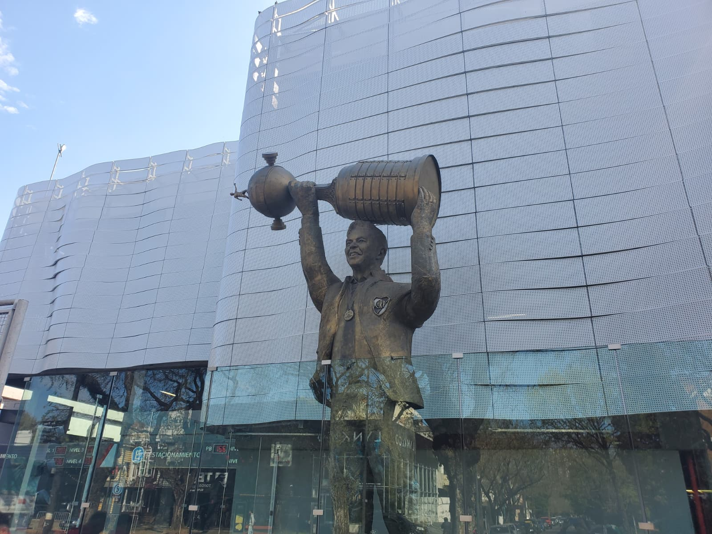

El estadio más grande de Sudamérica
Con capacidad para más de 83.000 espectadores, el Monumental fue sede de la final del Mundial 1978 y es hoy uno de los recintos deportivos más modernos de la región.
Historia, pasión y el estadio más grande de Sudamérica
El Más Monumental es la casa del Club Atlético River Plate y el recinto deportivo más grande de Sudamérica, sede de la final del Mundial 1978. Sus 3.500 m² de Museo River conviven con tecnología de punta: cine inmersivo 4D, un muro interactivo y el histórico túnel de acceso al campo, además de la posibilidad de recorrer tribunas y vestuarios en una visita guiada al estadio.

Tres rincones para buscar mientras recorrés el estadio y el museo.



Garantizá una experiencia fluida, accesible y segura en tu visita al Monumental.
Las entradas se pueden comprar online o en boletería, con cupos limitados.
Es requisito para ingresar al museo y al estadio.
La visita Express (15 min, una tribuna) es más corta que la Full (45 min, con vestuarios y campo).
Los días de partido el Monumental no realiza el tour completo por el estadio.
El Monumental suspende o restringe las visitas guiadas los días de partido. Recomendamos consultar los canales oficiales del club antes de planificar la visita.
Con capacidad para más de 83.000 espectadores, el Monumental fue sede de la final del Mundial 1978 y es hoy uno de los recintos deportivos más modernos de la región.